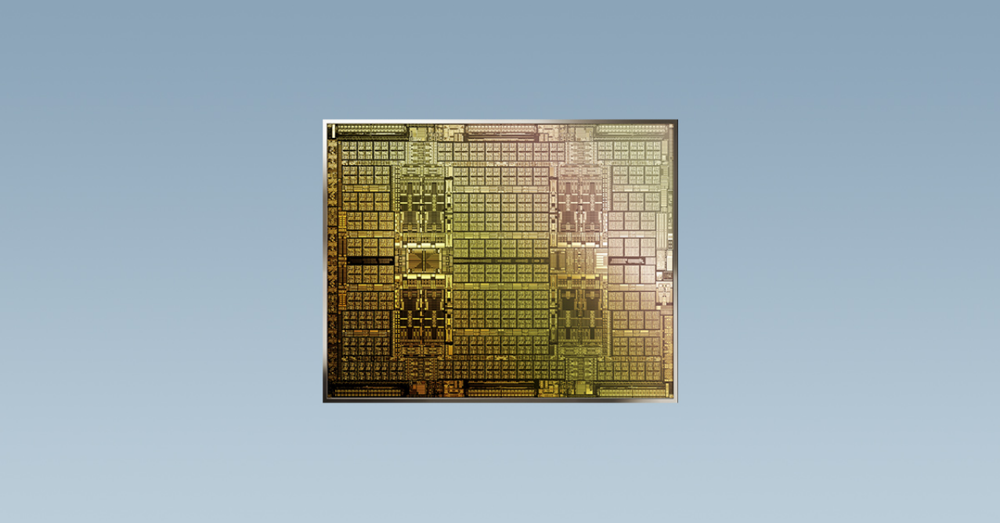

Cryptocurrency has been pushed into mainstream popularity over the past couple of years, with currencies like Bitcoin and Dogecoin skyrocketing in value and endorsed by figures like billionaire Elon Musk. This rise in popularity, however, comes with a set of unique complications.

In early 2018, the Graphics Processing Unit (GPU) market was hit by a severe stock shortage and an unusual spike in price coinciding with a surge in Bitcoin and Ether’s value. This led Nvidia to sell its GTX 10 series, AMD’s Radeon RX and Vega lineups
for almost twice their initial price.
More recently, the GPU market saw a resurgence in this phenomenon, with shortages even more severe than before, coinciding with a leap in the value of popular
cryptocurrencies. But why would cryptocurrencies affect GPU demand, a product
that is most popular among gamers? The answer lies in crypto mining, an integral part of the blockchain ecosystem.
n the network of cryptocurrency, mining is a process that is required to validate a transaction. Cryptocurrency ‘miners’ are individuals or companies that form a decentralised network of processing power by utilising their GPUs as servers to mine the
currency. To mine, GPU groups the recent cryptocurrency transactions into ‘blocks’
and then validates the transactions using the Secure Hash Algorithm (SHA). The speed at which this process is completed is measured using Hashes per second (H/s), or the Hash Rate.
A successful validation results in a small portion of the currency being rewarded to the miner as an incentive. This means that the more processing power a miner possesses, the more they can mine, and the larger the reward
is. Graphics Processing Units are highly efficient in completing these processes, more so than CPUs; thus, high-end GPUs are bought almost as soon as they are in stock. The interest in crypto mining is so high that cyber cafes
and server farms as far as Iran and China have been converted to mine cryptocurrency.
The demand for GPUs has certainly proved to be profitable for companies even as they face shortages. Nvidia’s Q4 2021 earnings revealed that cryptocurrency, primarily Ethereum, miners contributed between 100 to 300 million of their five billion US Dollar revenue. However, the larger consumer base is still overwhelmingly the gaming community, who have been vocally displeased about the stock shortages.
To combat the problem, Nvidia is releasing a driver update along with their new RTX 3060 GPUs, enabling the cards to automatically detect the
Ethereum mining algorithm and reduce GPU capabilities by 50% when in use. The company hopes that this would deter the miners from purchasing
their gaming GPUs and instead look towards their new product lineup — the Crypto Mining Processors (CMP).
The CMP lineup includes four
new models of tailor-made processors that mine Ether and are markedly different from Nvidia GPUs’ Geforce brand. The new CMPs lack the display outputs and are capable of better airflow while being used for mining, thus allowing
them to be more densely packed. These processors also have a lower peak core voltage and frequency, thereby improving mining power efficiency, and have an Ethereum Hash Rate of up to 86MH/s.
Nvidia isn’t alone in realising the profits associated with cryptocurrency and the larger blockchain industry. AMD has also been enthusiastically supportive of the technology and encourages it’s GPUs to be used for the purpose. The company hosts a dedicated
list of third party multi GPU rigs that utilise their products to use as mining servers. AMD has also partnered with companies like Morgenrot, Bullet Render Farms and Consensys, among others, to provide blockchain solutions beyond
the realm of cryptocurrency. Additionally, Intel has already filed a patent for an SoC aiming to accelerate bitcoin mining while optimising energy consumption to combat mining’s heavy energy utilisation. Some
studies have revealed that the collective energy consumed due to bitcoin mining is equivalent to that of entire nations.
The closest current parallel to the CMP is Chinese company Bitmain’s ASIC Bitcoin Miner. While the CMP is a dedicated processor for Ethereum mining, the ASIC Bitcoin Miner is a highly optimised integrated circuit that
is uniquely efficient in mining Bitcoin and is used by server farms and data centres worldwide.
According to CFO Colette Kress, Nvidia aims to cater directly to the industrial miners who prefer the optimised CMPs, with projected sales of around 50 million in Q1 2022. However, by crippling their upcoming consumer GPUs from mining Ether, Nvidia effectively pushes amateur Ethereum miners to invest in an additional GPU. This move also discourages new, non-industrial miners from entering an already costly ecosystem. On the other hand, Nvidia has not revealed any plans to prevent other cryptocurrency mining software from running on their GPUs, which could potentially cause yet another shortage.
Writing By CsJoy